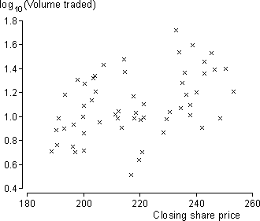

Normal errors
Another assumption in the normal linear model is that the model errors are normally distributed.
ε ~ normal (0 , σ)
If the model holds, the least squares residuals will also be normally distributed, so a histogram of the residuals can be examined for normality.
Normal errors are the least important of the model assumptions. If the other assumptions hold, it is reasonable to continue with the analysis, even if the errors have a skew distribution.
Normal probability plot
A better way to graphically examine a data set for normality is with a normal probability plot of the residuals. As with other probability plots, if the residuals are from a normal distribution, the crosses in the normal probability plot should lie close to a straight line.
How much curvature is needed to suggest non-normality?
In some data sets, linearity or nonlinearity in the probability plot is clear. In practice however, the randomness of real data means that the probability plot will not be exactly straight even for values that are sampled from a normal population.
How much curvature is needed to conclude that the underlying distribution is not normal?
This is a difficult question to answer. There are formal tests of normality that can be used in conjunction with a probability plot. (We discussed one in an earlier chapter about hypothesis tests.) We however take a less formal approach in the example below.
Share prices and volume traded
The scatterplot below shows the volume of British Petroleum shares traded in each of the first 60 full trading days of 2014 — between 2nd January and 19th March — and the closing share price. A probability plot of the residuals from the least squares line are also shown on the right.
There is a little curvature in the probability plot, suggesting that the error distribution could be skew with a long tail towards the high values.
Could this amount of curvature have occurred by chance? Select Random Normal Data from the pop-up menu to generate random data from a normal linear model whose parameters β0, β1 and σ are the same as the least squares estimates from our data. Click Take Sample several times to see the variability in the probability plot when a normal linear model does hold.
The probability plot from the data does not seem much more curved than many of the random ones, so the apparent curvature could be simply randomness in the data — we cannot conclude that the regression model assumptions are violated.
Warning
If the assumptions of linearity and constant variance are violated, or if there are outliers, the probability plot of residuals will often be curved, irrespective of the error distribution.
Only draw a probability plot if you are sure that the data are linear, have constant variance and have no outliers.
Share price and volume traded
In the British Airways example above, there appears to be greater variability in the volumes traded when the share price is high. This suggests that a transformation of the response might improve the fit of the model. The scatterplot below shows that a normal linear model would be a better description of the relationship between the logarithms of the volume traded and the share price — the distribution of points around the line is more symmetrical and there are no obvious problems with the other assumptions.
